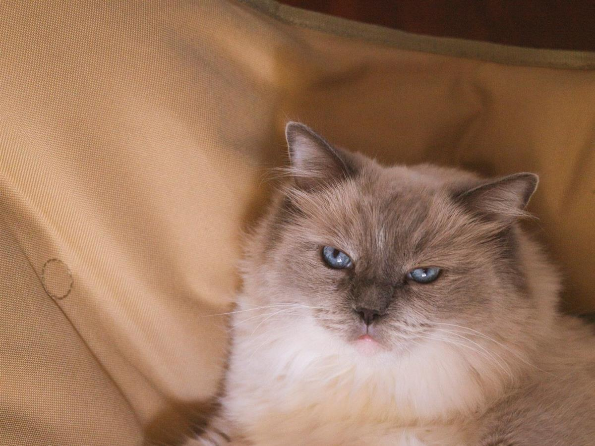
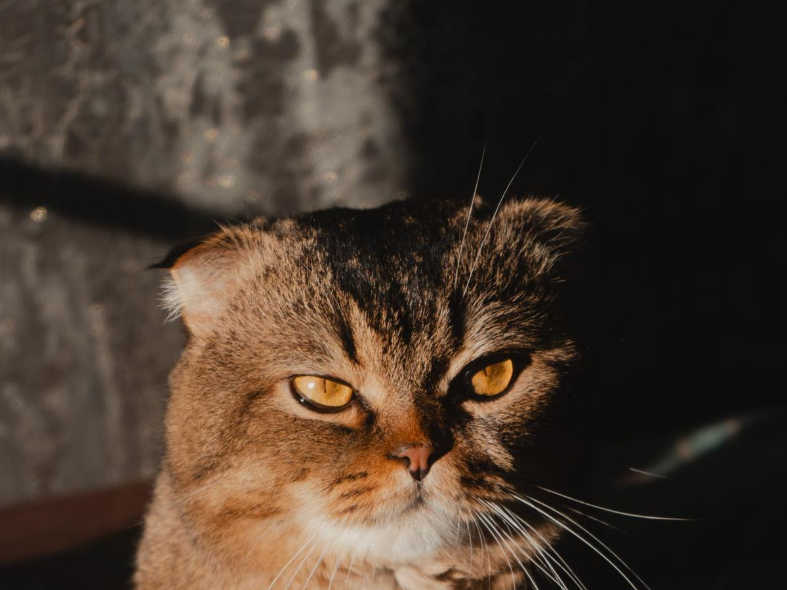
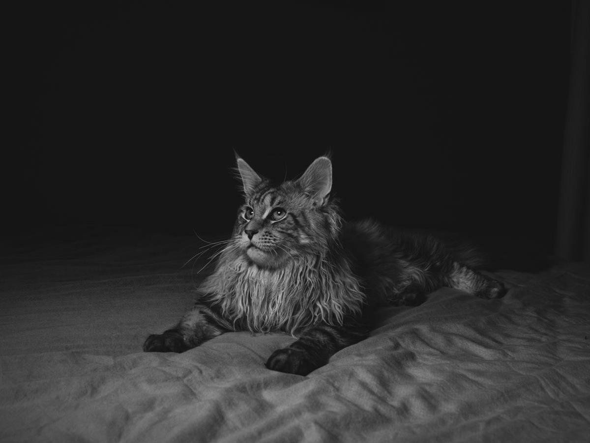

STORY 01 · 布偶猫
慢慢等到的那只布偶
它在前主人家里叫“年糕”，到新家后三天没从沙发底下出来。
领养人小林没有把它拖出来，只是把水、饭和猫砂盆移到沙发附近，每天晚上坐在地板上看书。第四天，年糕自己走出来，闻了闻她的手指。
现在它会在门口等她下班，但依然不喜欢被抱。小林说：“它不是不亲人，只是需要自己决定什么时候靠近。”
三个关于等待、磨合和重新开始的小故事。人物与猫咪均为化名，故事为本站原创。

它在前主人家里叫“年糕”，到新家后三天没从沙发底下出来。
领养人小林没有把它拖出来，只是把水、饭和猫砂盆移到沙发附近，每天晚上坐在地板上看书。第四天，年糕自己走出来，闻了闻她的手指。
现在它会在门口等她下班，但依然不喜欢被抱。小林说：“它不是不亲人，只是需要自己决定什么时候靠近。”

豆豆是一只被退养的折耳猫，理由是“尾巴好像不太灵活”。
新主人带它做了骨科检查，确认有轻度骨软骨发育异常。医生给了控制体重、软垫和定期复查的方案，没有想象中那么可怕。
现在豆豆每天最开心的事，是在低矮的猫爬架上晒太阳。新主人说：“折耳很可爱，但可爱不是忽略健康的理由。”

它被发现在小区车库，瘦得能摸到每一根肋骨，却依然很温和。
领养家庭原本只想临时寄养，结果第一晚它就把头搁在沙发扶手上睡着了。第二天，他们开始量阳台、买大号猫砂盆，认真讨论“家里够不够它活动”。
现在它有了自己的窗台和加宽猫爬架。领养人说：“不是我们收留了它，是它决定留下来。”
不着急选一只最漂亮的猫，先想清楚你能给它怎样的生活。